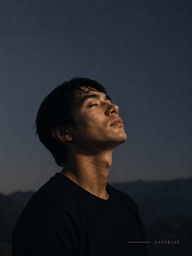

SafeRise Protocol
Investor & collaboration · one
One capability. Two subscription programmes.
SafeRise is the regulation and attention layer that makes everything else land. State-specific protocols for personal life and for the working environment — self-guided at the core, with human support as levels above it rather than as the product.
B2CSupport across personal life
For individuals navigating their inner experience, relationships and work. State-specific protocols help members regain steadiness and choose how to respond, in the moment rather than afterwards.
Personal Transformation · Relationship Healing · Professional Performance
B2BAccess through the organisation
People and HR teams, alongside departmental leaders, fund the shared foundation with pathways tailored to industry and department pressures. Members keep their personal work private.
Fourteen roles · sixteen industries · green industry, blue role
Attention concerns what a person notices and gives their internal resources to. Awareness creates room to see an experience and its possible meanings more clearly. Authorship is the capacity to choose a response and take responsibility for it.
Six frameworks, tiered by evidence. Porges, HeartMath and Kross lead and stand independently; Maté, Jung and Watts are labelled clinical-practice or interpretive and never presented as mechanism. Clinical governance is a gate, not a footnote — four tracks stay unbuilt until a licensed clinician is contracted.
SafeRise Protocol
Investor & collaboration · two
A complete experience around each state.
Guidance for the immediate moment, with resources that support understanding, integration and everyday use. Protocols are matched to a state a person recognises in themselves — not to a diagnosis, and not to a curriculum.
An eight-track foundation every employee receives, plus one protocol built for their role and one for their industry. Seats are priced from €15 down to €11 with volume; a delivered pilot programme is €1,800.
The organisation creates the conditions and funds access. The individual owns what happens inside their account. Nothing a member writes or practises is visible to the employer.
Guided practice and cue cards support the immediate moment. Clear explanations, subject-matter expert insights and safe-practice guidance deepen understanding.
Private journaling and progress tracking help members record experiences, recognise recurring patterns and see how responses change over time.
Disclosure and repair resources help members seek support, communicate what they need and carry the work into relationships and everyday life.
Individual sessions, guided workshops and retreats sit alongside membership. Organisations can combine platform access with facilitated sessions scoped to their teams.

Personal Transformation · Relationship Healing · Professional Performance — each protocol a recognisable state, with its own practice, resources and private journal.
SafeRise Protocol
Investor & collaboration · three
Build the next stage with us.
A six-month development and launch programme, supported by a proposed $15,000 bridge. Each phase has a defined deliverable, with the first organisational engagements informing the next specialist releases.
Ten B2C tracks. Complete the seven additional tracks in phased batches, following the existing protocol and resource architecture. Production includes editorial and specialist review, cover assets, recording and member journeys. The eight-track organisational core draws from the same library.
B2B and specialist pathways. Introduce the shared core through scoped programmes for selected teams. Develop Sales & Quota first, then Contact Centre around a tested short-format resource. Add a further department or industry pathway where a qualified buyer and a defined use case support the build.
Sales and enablement leaders in technology and B2B services; People and learning leaders sponsoring manager cohorts; operations leaders in contact centres. Proposed entry audiences grounded in the founder's commercial background and the track planning documents.
Embodied Nutrition, movement and discipline, and clinical advisory contributions help translate specialist knowledge into SafeRise experiences. Each collaboration defines its content contribution, review responsibilities, production role and commercial terms.
Meet to explore investment, a team proof of concept or a specialist collaboration. An introduction to the right employer, or a pilot inside an organisation you can influence, moves this as far as the cheque does.
Andre Robley · contact@thesaferiseprotocol.com · thesaferiseprotocol.com